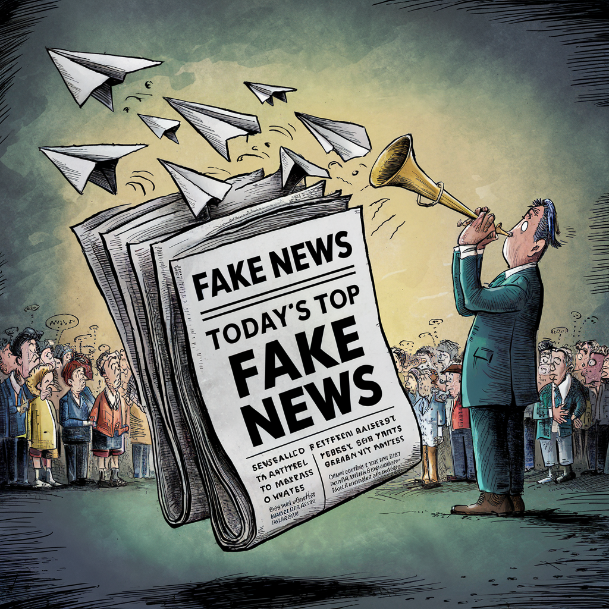

Exemples

>
La propagande pro-russe a connu une augmentation significative ces deux dernières années, particulièrement en période de conflits géopolitiques (comme le conflit russo-ukrainien).
fake news sont souvent diffusées via des plateformes de réseaux sociaux et des sites web apparemment légitimes, mais qui servent les intérêts du gouvernement russe.
Ces nouvelles visent à manipuler l'opinion publique et à semer la confusion.
Théories du complot
De nombreux théories du complot se présume :
Vaccins et micropuce : Une théorie populaire parmi les groupes antivaccins est que les vaccins contre la COVID-19 contiennent des micropuces implantées par les gouvernements pour surveiller les populations. Cette théorie a été maintes fois démentie par des experts de la santé et des scientifiques, soulignant qu'aucune technologie de ce type n'existe dans les vaccins.
5G et COVID-19 :Une autre fake news répandue est que la technologie 5G est responsable de la propagation de la COVID-19. Des théories conspirationnistes affirment que les réseaux 5G affaiblissent le système immunitaire ou propagent le virus.
Ces affirmations ont été réfutées par la communauté scientifique, expliquant qu'il n'y a aucun lien entre la technologie 5G et les infections virales.
Sites visant à entraîner le clic des utilisateurs pour les monétiser:
Ils cherchent à attirer le clic en ayant des informations extraordinaires ou qui engendrent des émotions telles que la peur, la haine.
Plusieurs façons de monétiser: La publicité. La vente d’un produit en rapport avec la news
Sites web compromettant la sécurité de l’appareil:
Ces sites web contiennent des publicités/cookies/fichiers malveillants compromettant la sécurité de l’appareil utilisé.